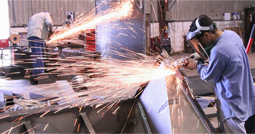
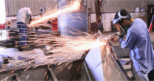

Seth Ravens
GC, NYC
Having heard about Allied Steel NY, we purchased a considerable amount of steel to build a secondary car-parking shed for our company. I had a bad experience with a different steel supplier.
I found Allied Steel NYC and the staff to be very accurate, with an on time delivery of the fabricated steel order. Pricing was highly competitive and I was happy to have received such excellent customer service. We highly recommend Allied Steel of New York City; we now have a new steel supplier local to us in New York City.

Ralph Mannings
Project Manager
We would like to take this opportunity to thank the team of Allied Steel NY for providing the fabricated steel used in constructing our auto workshop. One of the main priorities for this building was the height. The height had to allow for not only the entry of a high van, but also for this van to be raised on a lift in order to access and work on the underneath.
Allied Steel NY provided us everything we needed, all calculations and sizing was absolutely right on the money. All the framing steel was fully galvanized as per our We selected galvanized steel for the minimal amount of maintenance for this building. The overall fabrication work was carried out to a standard befitting a quality Steel Company and its workmanship team is a testament to their overall pride and professionalism.

Sven Jonas
Construction Manager
Allied Steel NYC provided our contractor with quality fabricated steel allowing our project and construction to go quickly and smoothly. Thank your for your honesty and integrity, qualities that are increasingly hard to find in a supply company these days. We would be more than happy to allow any potential clients to visit our project and inspect the quality of the aluminum and steel work. Again thanks to all your team for a great job and we have no hesitation in recommending you to anyone in need of any fabricated metal.

Frank Risignano
Plant Manager
Over the past few years, we have placed a number of orders from the Allied Steel NYC for a number of key projects in Queens NYC, mainly utilizing ASTM A500 & A588 for our cold storage plant located in in Brooklyn, NYC. In order to meet our specific requirements, Allied Steel NYC proved to be the best, especially from cost-effectiveness point of view. The fabricated steel and service provided by Allied Steel was comparatively less in cost as compared other NYC Steel Companies and Fabricators.
It has been of paramount importance to have a great working relationship with a steel company and Allied Steel NYC has become our key steel supplier. Allied Steel NYC continues to prove themselves in an open and honest manner, which benefits this time and time again.

Vincent Reggio
Assistant Plant manager
Our Waste Disposal Plant Long Island City, NYC had been suffering under heavy snow during the last several winters. The old storage shed was a combination of wood and steel and suffered a complete collapse along the rear corner, weakening the rest of the structure.
Having heard great things about Allied Steel NY, decided to seek their assistance in restoring the damaged shed. Our contractor was excited to work with this New York City based steel company, and we went with a modified steel frame engineered to withstand the harshest of conditions including intense snow load.
Our contractor was quite happy as all the material arrived exactly when we needed it, delivered by Allied Steel delivery trucks directly to our Long Island City location, on time, with no issues. Our contractor told us the quality of the steel was excellent and fabricated exactly as were required to achieve both the look and requirement.
I would recommend Allied Steel NYC Steel Fabrication Company to any company who is looking for qualitative, long-lasting and affordable steel products.

John Simmons
VP
It’s truly amazing to witness the evolution Allied Steel New York has gone through over the years and it has been a pleasure of dealing with them.
The business has grown thanks in no small part to their excellent service, as well as an already impressive, yet continually expanding, product range. They have become a key supplier for our projects of steel tube columns, custom pipe supports and steel frames and much more.
Allied Steel’s business strategy and customer service is strategically aligned with ours, they have really helped our company to be more productive; and proactive communication with our Procurement and Site Team has been outstanding, we are happy to have an excellent supply chain partner!

Miles Grebnor
General Contractor
In December 2014, last year, we were commissioned to restore a 5 story commercial building in Queens, NYC. Allied Steel NYC fabricated all the required steel in less than 30 days, delivering the entire order directly to our site. We were extremely happy with the quality of the steel and the pricing was right in line with what we had budgeted.
The customer is “delighted” with the result of the restoration and upgrades and is already moved back into the building.

Steve Fusco
Product Manager
We have been ordering our custom fabricated steel from Allied Steel New York City for years and they continue to be our preferred supplier of Fabricated steel products for most all of our projects.
Allied Steel NYC staff has tirelessly developed a trusted and time served relationship with our Engineering Based Company since we launched our business when we began purchasing small amounts of steel product for projects on Staten Island New York City.
The general engineering industry is a tough business and we are often lumping our suppliers with unreasonable demands for service, price and delivery. Allied Steel NYC always strives to meet these demands and we are continually surprised and impressed with the flexibility and customer service.

Russel
Project Manager
Manhattan NYC
If you require general sheet metal work, medium plate, or steel fabrication in Manhattan, NYC, look no further than Allied Steel New York City. As a metal fabrication company specializing in a variety of steel-related products, we work closely with them to meet all our requirements. We service a variety of industries, as well as government agencies and can depend on Allied getting the order right and delivered fast.
As a steel fabricator, Allied Steel has provided us with custom structural steel fabrication and metal. Allied Steel has a solution to meet your specific requirements.

Donald Peterson
Project Foreman
NYC
We contracted with Allied Steel NYC as key supplier in order to complete our 4 large construction projects in Brooklyn. This installation required custom metal bending with sizes ranging from quarter inch up to three quarter inch thick, in addition to sheet metal fabrication of stainless steel and aluminum products. The custom fabricated plates and formed stainless steel and Aluminum pieces were fabricated promptly and correctly. Allied Steel NY made the job much easier with their reliable service and quality products, better than any other steel fabricators we used in the past and also made deliveries outside of normal business hours. The quality work is reliable, long-lasting and the special deliveries provided greater flexibility for our project.
My experience with Allied Steel New York City as the supplier of this steel products is highly recommended in terms of cost and quality.

Steven Meyer
VP
Dealing with custom Fabricated Steel orders form Allied Steel NYC has been nothing but a pleasure. From on time delivery directly to our site, care and precise specs they have been very reliable with quality of the fabricated steel products never compromised. We awarded Allied Steel NY the contract to supply structural steel for the strip mall project in the Bronx, NYC, worth over a half million dollars. Allied Steel NY provided a quality team that we were in constant contact with. Their quality workmanship helped us to keep the project on track of its tight schedule set by the owner. They have consistently met our guidelines and proved their dedication to their customers for a complex project, combined with the busy site, and a fast tracked schedule.

Matthew Perla
General Manager
SVP
We chose Allied Steel as our key supplier for our upcoming project after touring the metal/steel manufacturing facility. I am pleased to say everything I was told was true. Our order was delivered exactly as described, within the delivery window they gave us. We have since switched to Allied Steel NYC for all our projects, big or small. Allied has always delivered each and every time and I would highly recommend them for any steel based project in any of the five NYC boroughs.
 (212) 709-8123
(212) 709-8123